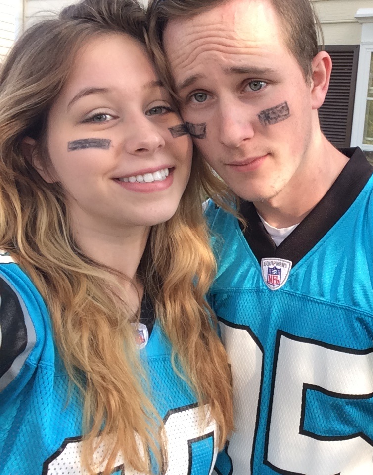

About Me

My name is Jacob Woodruff and I am 24 years old. I have a girlfriend of six years, we have a son who is four years old, and a Shiba Inu (a Japanese hunting dog), by the name of Atlas. His name originates from the video game, Bioshock.
My main hobby is making music and I love anything related to music. I can play five instruments and I record a lot of my products as well. My other hobby is soccer; though it has been a long time, I played for the fourth ranked team in all of Ohio.
I am originally from Columbus, Ohio. I have lived in the Matthews area for about three years now. The majority of the time, I really enjoy living in North Carolina. I like the people and the scenery. The one thing I am not a fan of is the incredibly high allergen concentration. I dont think I've breathed correctly since I relocated here.
My goal for within the next five years is to pursue a job in coding. I am not really picky about where exactly in the field I fall, I just want to better my own life as well as the life of my child, girlfriend, and Atlas too!
Connect with Me